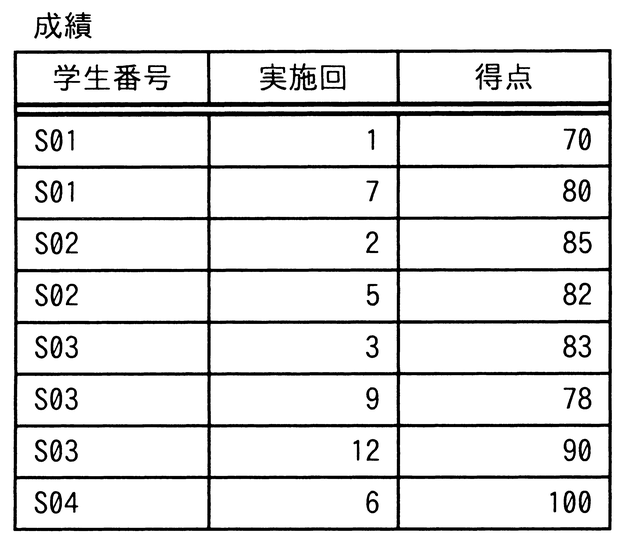

“成績”表に対して，SQL文1と同一の結果を得るために，SQL文2のaに入れる字句はどれか。

〔SQL文1〕
SELECT R1.学生番号, R1.実施回, R1.得点 FROM 成績 R1
INNER JOIN
(SELECT 学生番号, MIN(実施回) AS 初回 FROM 成績
GROUP BY 学生番号) R2
ON R1.学生番号 = R2.学生番号
AND R1.実施回 = R2.初回
〔SQL文2〕
SELECT 学生番号, 実施回, 得点
FROM (SELECT 学生番号, 実施回, 得点, ROW_NUMBER() OVER ( a ) AS 番号
FROM 成績) R1
WHERE R1.番号 = 1
ア
ORDER BY 学生番号, 実施回
イ
PARTITION BY 学生番号 ORDER BY 実施回
ウ
PARTITION BY 学生番号 ORDER BY 得点 ASC
エ
PARTITION BY 学生番号 ORDER BY 得点 DESC